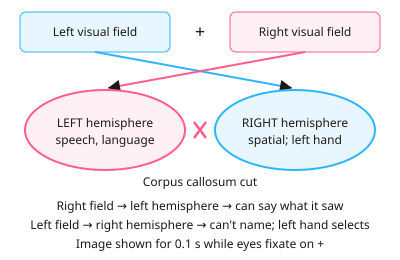

A-level Psychology Year 12 · Topic 8
Biological area: core studies
The biological area explains behaviour through the brain, the nervous system and the body.
We will study Sperry's split-brain patients, Blakemore and Cooper's kittens, Dement and Kleitman on sleep and dreaming, Maguire's taxi drivers, and Casey's follow-up of the marshmallow test.
Notice how each study measures the body objectively, and think about what that can and can't tell us about the mind.
- 7 subtopics
- 191 questions
- Free: 8.1 notes and 10 questions
In this topic
- 8.1Sperry (1968) Hemisphere deconnection and unity in conscious awarenessFree below · 26 questions
- 8.2Blakemore and Cooper (1970) Development of the brain depends on the visual environmentOpen in Full Marks · 31 questions
- 8.3Dement and Kleitman (1957) Sleep cycles, REM and dreamingOpen in Full Marks · 28 questions
- 8.4Maguire et al. (2000) Navigation-related structural change in the hippocampi of London taxi driversOpen in Full Marks · 36 questions
- 8.5Casey et al. (2011) Behavioural and neural correlates of delay of gratificationOpen in Full Marks · 32 questions
- 8.6Hassett et al. (2008) Sex differences in rhesus monkey toy preferencesOpen in Full Marks · 19 questions
- 8.7Hölzel et al. (2011) Mindfulness practice and increases in brain grey matter densityOpen in Full Marks · 19 questions
8.1 · Free notes
Sperry (1968) Hemisphere deconnection and unity in conscious awareness

Key points
- Sperry (1968) investigated whether hemisphere deconnection (cutting the corpus callosum) splits conscious awareness, so that each hemisphere perceives, learns and responds independently.
- The sample was 11 patients with severe epilepsy who had a commissurotomy. It is a quasi-experiment: the surgery was not assigned by the researcher, so the IV is naturally occurring.
- Contralateral wiring: the right visual field (and right hand) connects to the left hemisphere. The left visual field (and left hand) connects to the right hemisphere.
- Visual tests used a tachistoscope. Patients fixated on a central point and an image was flashed for about 0.1 s to one visual field only. This was too short for eye movements to let both hemispheres see it.
- Tactile tests: objects were felt out of sight with one hand behind a screen. The patient had to name the object, or pick out a matching object by touch.
- Findings: objects shown to the right visual field (left hemisphere) were named and described normally. Objects shown to the left visual field (right hemisphere) were not named; patients said they saw nothing or only a flash.
- The right hemisphere still understood the stimulus. The left hand could pick out the correct object from a hidden set, or point to a matching picture, even though the patient could not say what it was.
- Chimeric figures (a composite face of two halves): the left hand pointed to the half seen in the left field. Verbally the patient described the half seen in the right field. Each hemisphere responded to its own half.
- Emotional responses: a nude picture flashed to the left field produced blushing or giggling. The patient could not say why, which shows the right hemisphere processes emotion without access to speech.
- Conclusion: lateralisation of function. The left hemisphere is specialised for language and analysis, and the right for spatial, pattern and non-verbal tasks. After deconnection there are effectively two separate streams of conscious awareness.
- Evaluation: the procedures were highly controlled and standardised, so they are reliable and replicable. The detailed data are rich.
- Evaluation weaknesses: the small, unrepresentative sample and the history of epilepsy mean the brains may have reorganised (plasticity). There was no pre-surgery baseline, so generalising to normal brains is limited.
In more detail
- Why the surgery: cutting the corpus callosum stopped epileptic seizures spreading from one hemisphere to the other. Patients seemed normal in everyday life, so special lab tests were needed to reveal the split.
- Worked trial: the word 'key' is flashed to the left visual field → the right hemisphere sees it → the patient says they saw nothing, but the left hand picks out a key from objects hidden behind a screen.
- Two-word trial: 'key case' is flashed with 'key' in the left field and 'case' in the right. The patient says 'case', but the left hand searches for a key, so each hemisphere received a different word.
- Right hemisphere language: the left hand could pick out an object from a simple written description, which shows the right hemisphere has some language comprehension even though it cannot speak.
- Exam tip: link visual field to hemisphere in one step: left visual field → right hemisphere → left hand; right visual field → left hemisphere → speech.
Practice
Sperry (1968) Hemisphere deconnection and unity in conscious awareness: 10 questions
Pick an answer to check it, or open the answer for the explanation.
1. Which brain structure had been surgically cut in the patients studied by Sperry (1968)?
- Frontal lobe
- Corpus callosum
- Hippocampus
- Amygdala
Show answer
B: Corpus callosum. The corpus callosum is the bundle of fibres joining the two hemispheres. Cutting it (commissurotomy) to control epilepsy is what created the 'split-brain' patients.
2. Why did Sperry flash images for only about 0.1 seconds?
- To test short-term memory capacity
- To reduce the patients' anxiety
- To make the image appear brighter
- To stop eye movements letting both hemispheres see the image
Show answer
D: To stop eye movements letting both hemispheres see the image. A very brief flash while fixating on a central point stops the eyes moving, so the image stays in one visual field and reaches only one hemisphere.
3. A split-brain patient is shown a picture of a spoon in the left visual field only and asked what they saw. What is the most likely verbal reply?
- 'A fork'
- 'Nothing' or only a flash of light
- 'A spoon'
- 'A knife'
Show answer
B: 'Nothing' or only a flash of light. The left visual field projects to the right hemisphere, which lacks speech control. The speaking left hemisphere has not seen the image, so the patient reports nothing.
4. Why could the patients' left hand pick out an object that they could not name?
- The left hand is controlled by the left hemisphere
- The left hand is controlled by the right hemisphere, which had seen the object
- Touch sensation is unaffected by the surgery
- The corpus callosum was only partly cut
Show answer
B: The left hand is controlled by the right hemisphere, which had seen the object. Motor control is contralateral: the left hand is controlled by the right hemisphere. This hemisphere recognised the object even though it cannot produce speech.
5. A split-brain patient holds an unseen key in the right hand behind a screen. What is most likely?
- They can name it, because the right hand links to the language hemisphere
- They name it only if it is moved to the left hand
- They cannot feel it at all
- They cannot name it, because the right hand links to the right hemisphere
Show answer
A: They can name it, because the right hand links to the language hemisphere. The right hand sends touch information to the left hemisphere, which controls speech, so naming is possible. Left-hand objects could not be named.
6. In the chimeric figures task, which result did Sperry report?
- Patients could not respond at all
- The left hand picked the half-face seen in the right field
- The left hand picked the left-field half; speech described the right-field half
- Patients said they saw both halves
Show answer
C: The left hand picked the left-field half; speech described the right-field half. Each hemisphere responded to its own half. The right hemisphere (left hand) chose the left-field image, while the left hemisphere (speech) described the right-field image.
7. Which is the best description of Sperry's research method?
- A naturalistic observation
- A quasi-experiment with a case-study element
- A longitudinal survey
- A field experiment
Show answer
B: A quasi-experiment with a case-study element. Patients had already had the surgery, so the IV (split brain) was not assigned by the researcher. Detailed testing of individuals gives a case-study element.
8. Which is a key limitation when generalising Sperry's findings to the general population?
- Tests were carried out in the participants' homes
- The researchers were biased in selecting the surgeons
- The sample of 11 had epilepsy and unusual brains, so is unrepresentative
- The stimuli were too complex
Show answer
C: The sample of 11 had epilepsy and unusual brains, so is unrepresentative. Small numbers of epileptic patients with possible brain reorganisation (plasticity) may not behave like people with an intact corpus callosum, so generalisation is limited.
9. A nude photo is flashed to a split-brain patient's left visual field. She giggles and blushes but says she saw nothing. What does this show?
- The left hemisphere processed the image
- The right hemisphere processed the image emotionally but cannot speak about it
- Emotion is controlled only by the corpus callosum
- The patient was lying
Show answer
B: The right hemisphere processed the image emotionally but cannot speak about it. The image reached only the right hemisphere, which responded emotionally. Without the callosum, the speech-controlling left hemisphere could not explain the reaction.
10. Which statement best reflects Sperry's conclusion about consciousness?
- Consciousness is located in the corpus callosum
- Only the left hemisphere is conscious
- Deconnection can produce two separate streams of conscious awareness
- Consciousness is unaffected by surgery
Show answer
C: Deconnection can produce two separate streams of conscious awareness. Each hemisphere appeared to perceive, learn and respond independently, suggesting two separate conscious systems once communication is cut.
Keep going in Full Marks
Full Marks has 26 questions on Sperry (1968) Hemisphere deconnection and unity in conscious awareness (16 more than here), set out in practice levels. You also get notes and 3D models for all 7 subtopics of Biological area: core studies, plus games, timed exams and past papers.
On your exam board
- OCRTopic 6: Biological area: core studies, Topic X: Wider reading: more classic studies
- CambridgeTopic 2: The biological approach
Not in the AQA and Edexcel specifications.